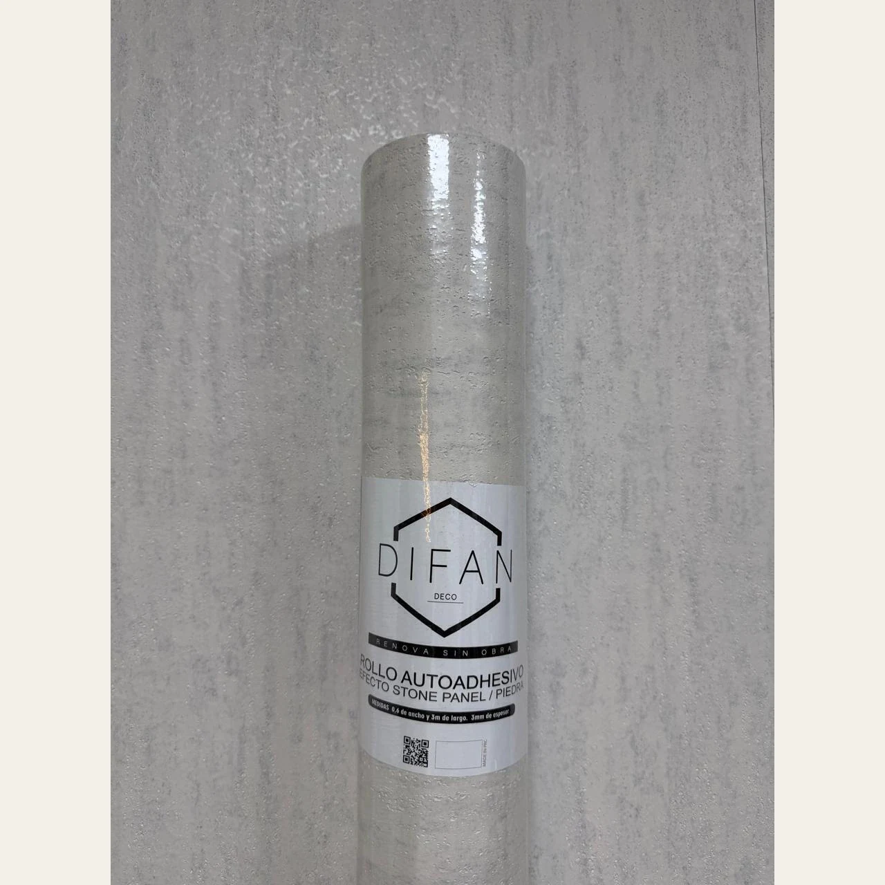

ProductoPiedra flexible
Rollo Piedra Flexible Autoadhesiva Tiza - Simil Cemento 0.60 X3 Mts
Revestimiento flexible de aspecto pétreo, presentado en el formato indicado. Las medidas, la terminación y el método de colocación se detallan según la publicación del proveedor.
Datos del proveedor: Ancho: 0,60 metros. Largo: 3 metros. Material: piedra flexible técnica con base autoadhesiva de alta adherencia. Incluye: pegamento.
- Ancho
- 0,60 metros
- Largo
- 3 metros
- Rendimiento por rollo
- 1,80 m²
- Material
- piedra flexible técnica con base autoadhesiva de alta adherencia
- Textura
- relieve táctil — imitación piedra natural
- Uso
- interior — evitar contacto directo con agua constante (ej: interior de ducha)
- Incluye
- pegamento
Disponibilidad FORMA: Consultar
Confirmamos precio, disponibilidad y entrega antes de cerrar el pedido.
Instalación y preparación
¡Solo 4 pasos!
Limpiar: asegurate de que la superficie esté libre de polvo, grasa y humedad.
Medir: tomá las dimensiones y cortá el paño necesario.
Pegar: retirá el film protector y aplicá presionando desde el centro hacia los bordes para evitar burbujas.
Disfrutar: ¡listo! Tu ambiente renovado al instante.
Importante: para una instalación óptima, desenrollá el revestimiento y dejalo reposar al menos 12 horas totalmente extendido antes de colocarlo.
MÁS OPCIONES